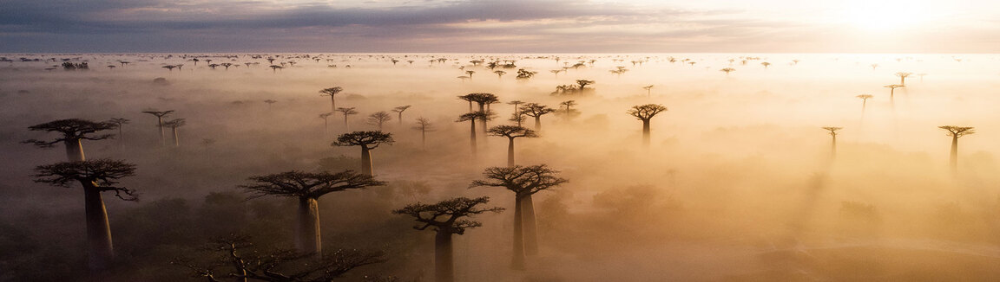

Climate Change
Photo Credit: Climate change litigation in Africa via White & Case
From Climate Change Knowledge Portal (https://climateknowledgeportal.worldbank.org/overview):
The Earth’s climate is changing and the global climate is projected to continue to change over this century and beyond. The magnitude of climate change beyond the next few decades will depend primarily on the amount of greenhouse (heat-trapping) gases emitted globally and on the remaining uncertainty in the sensitivity of the Earth’s climate to those emissions. With significant reductions in the emissions of greenhouse gases (GHGs), global annual averaged temperature rise could be limited to 2°C or less. However, without major reductions in these emissions, the increase in annual average global temperatures, relative to preindustrial times, could reach 5°C or more by the end of this century.
The global climate continues to change rapidly compared to the pace of the natural variations in climate that have occurred throughout Earth’s history. Trends in globally averaged temperature, sea level rise, upper-ocean heat content, land-based ice melt, arctic sea ice, depth of seasonal permafrost thaw, and other climate variables provide consistent evidence of a warming planet. These observed trends are robust and confirmed by multiple, independent research groups around the world.
Observations of the climate system are based on direct physical and biogeochemical measurements, and remote sensing from ground stations and satellites. Information derived from paleoclimate archives provides a long-term context of past climates. Different types of environmental evidence are used to understand what the Earth’s past climate was like and why. Records of historical climate conditions are preserved in tree rings, locked in the skeletons of tropical coral reefs, sealed in glaciers and ice caps, and buried in laminated sediments from lakes and the ocean. Scientists can use those environmental recorders to estimate past conditions, extending our understanding of climate back hundreds to millions of years. Global-scale observations from the instrumental era began in the mid-19th century, and paleoclimate reconstructions extend the record of some quantities back hundreds to millions of years. Together, this provides a comprehensive view of the variability and long-term changes in the atmosphere, the ocean, the cryosphere and at the land surface.